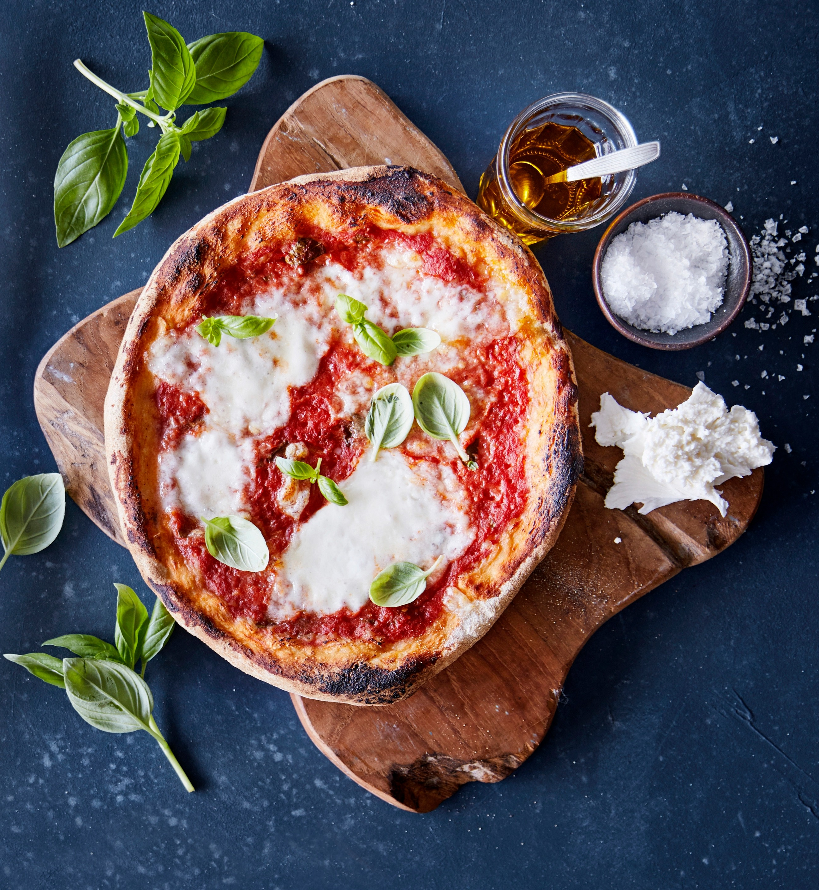

Pizza

Description
This recipe will teach you how to make an authentic Margherita Pizza.
Ingredients
- 3 1/2 cups all-purpose flour
- 1 teaspoon of salt
- 1 cup of water
- 1 package of active dry yeast
- 1/4 cup of flour for dusting
- 2 cups of pizza sauce
- 20 slices of fresh mozzarella cheese
- 20 leaves of fresh basil
- olive oil
- sea salt
Steps
- Stir flour and 1 teaspoon salt in a bowl & set aside
- Mix water, yeast and sugar in a large bow. Let it stand until the yeast begins to form a creamy foam, this should take about 5 minutes
- Stir half of the flour mixture into the yeast mixture until there are no dry spots remaining. Stir the remaining flour in 1/2 cup at a time, mix well after each addition. When the dough pulls together, turn it out of the bowl into a floured surface and knead until it's smooth and elastic
- Lightly oil a large bowl, then place the dough in the bowl and turn to coat the dough with oil. Cover it with light cloth and let the dough rise in a warm place (80 to 95 degrees F) until the dough is doubled in volume. Punch the dough down and divide it to four balls of equal size
- Preheat the oven with a pizza stone to 500 degrees F
- Stretch out 1 dough ball to form a circle that is 10 to 12 inches in diameter. Place the dough on a lightly floured pizza peel. Top it with 1/2 cup of tomato sauce and spread to cover within an inch of the edge of the dough. Arrange 5 slices of mozzarella cheese on top of the tomato sauce, then place 5 basil leaves on top. Drizzle the pizza with a tablespoon of olive oil and finish with sea salt to taste
- Slide the pizza onto the pizza stone and bake until cheese is bubbly and crust is golden brown, roughly 5 to 7 minutes